Fichas de lectura
Texto informativo en español con huecos y banco de palabras, comprensión auditiva con código QR (audio gratuito) y sopa de letras: 5 páginas con solucionario.
3.152 recursos
Materia
Grado
Por grado: 7.º grado (1.º de ESO) · 1.º de ESO · 1.º de primaria
Strix aluco – Ficha de comprensión lectora primaria: texto con huecos y sopa de letras
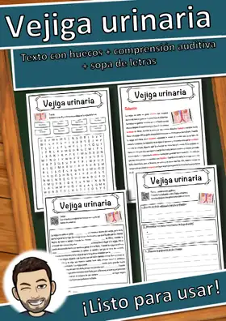
Vejiga urinaria – Ficha de comprensión lectora primaria: texto con huecos y sopa de letras
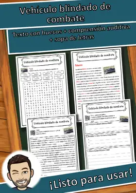
Vehículo blindado de combate – Ficha de comprensión lectora primaria: texto con huecos y sopa de letras
Uadi – Ficha de comprensión lectora primaria: texto con huecos y sopa de letras
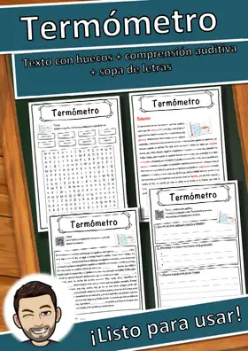
Termómetro – Ficha de comprensión lectora primaria: texto con huecos y sopa de letras
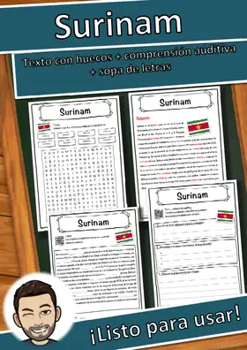
Surinam – Ficha de comprensión lectora primaria: texto con huecos y sopa de letras
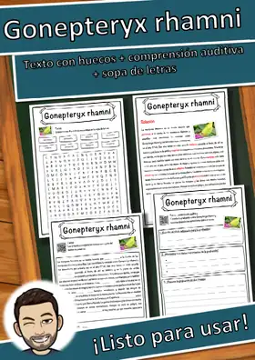
Gonepteryx rhamni – Ficha de comprensión lectora primaria: texto con huecos y sopa de letras
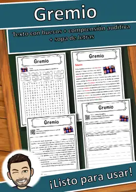
Gremio – Ficha de comprensión lectora primaria: texto con huecos y sopa de letras
ß – Ficha de comprensión lectora primaria: texto con huecos y sopa de letras
Somalia – Ficha de comprensión lectora primaria: texto con huecos y sopa de letras
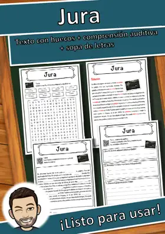
Jura – Ficha de comprensión lectora primaria: texto con huecos y sopa de letras
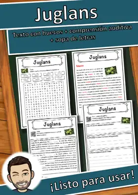
Juglans – Ficha de comprensión lectora primaria: texto con huecos y sopa de letras
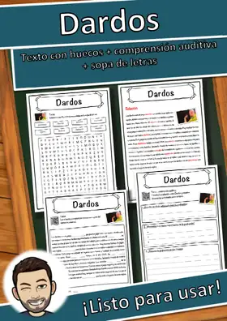
Dardos – Ficha de comprensión lectora primaria: texto con huecos y sopa de letras
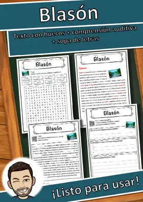
Blasón – Ficha: texto con huecos, comprensión auditiva y sopa de letras
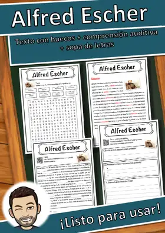
Alfred Escher – Ficha: texto con huecos, comprensión auditiva y sopa de letras
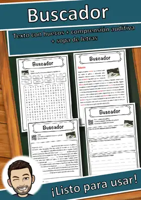
Buscador – Ficha: texto con huecos, comprensión auditiva y sopa de letras
Automóvil – Ficha: texto con huecos, comprensión auditiva y sopa de letras
Accidente – Ficha: texto con huecos, comprensión auditiva y sopa de letras
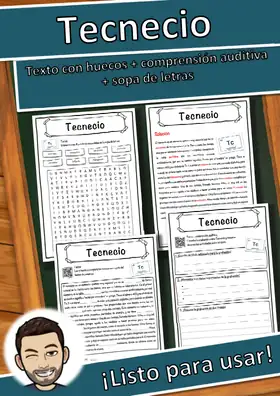
Tecnecio – Ficha: texto con huecos, comprensión auditiva y sopa de letras
Ortoedro – Ficha: texto con huecos, comprensión auditiva y sopa de letras
Mármol – Ficha: texto con huecos, comprensión auditiva y sopa de letras

Tejido – Ficha de lectura: texto con huecos, comprensión auditiva y sopa de letras
Georges Pierre Seurat – Ficha de lectura: texto con huecos, comprensión auditiva y sopa de letras
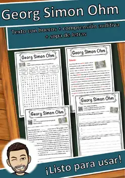
Georg Simon Ohm – Ficha de lectura: texto con huecos, comprensión auditiva y sopa de letras
Síndrome Amok – Ficha: texto con huecos, comprensión auditiva y sopa de letras
Suelo franco – Ficha: texto con huecos, comprensión auditiva y sopa de letras
Socialismo – Ficha: texto con huecos, comprensión auditiva y sopa de letras
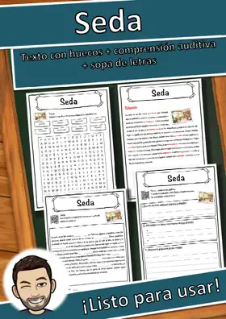
Seda – Ficha: texto con huecos, comprensión auditiva y sopa de letras
Batalla naval – Ficha: texto con huecos, comprensión auditiva y sopa de letras
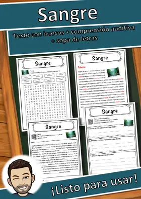
Sangre – Ficha: texto con huecos, comprensión auditiva y sopa de letras
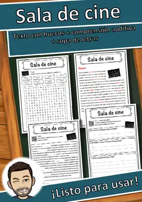
Sala de cine – Ficha: texto con huecos, comprensión auditiva y sopa de letras
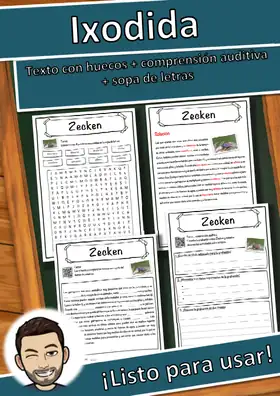
Ixodida – Ficha: texto con huecos, comprensión auditiva y sopa de letras
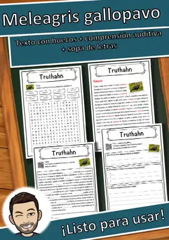
Meleagris gallopavo – Ficha: texto con huecos, comprensión auditiva y sopa de letras
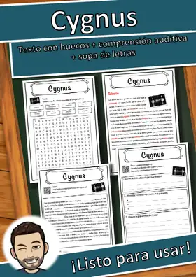
Cygnus – Ficha: texto con huecos, comprensión auditiva y sopa de letras
Borrador de tinta – Ficha: texto con huecos, comprensión auditiva y sopa de letras

Río Elba – Ficha: texto con huecos, comprensión auditiva y sopa de letras
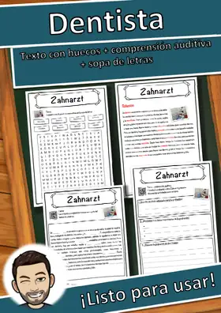
Dentista – Ficha: texto con huecos, comprensión auditiva y sopa de letras
Vladivostok – Ficha: texto con huecos, comprensión auditiva y sopa de letras
Uva – Ficha: texto con huecos, comprensión auditiva y sopa de letras
Walhalla – Ficha: texto con huecos, comprensión auditiva y sopa de letras
Organización de las Naciones Unidas – Ficha: texto con huecos, comprensión auditiva y sopa de letras
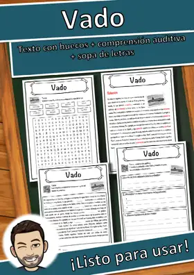
Vado – Ficha: texto con huecos, comprensión auditiva y sopa de letras
Juego social – Ficha: texto con huecos, comprensión auditiva y sopa de letras
Humo – Ficha: texto con huecos, comprensión auditiva y sopa de letras
Extremismo – Ficha: texto con huecos, comprensión auditiva y sopa de letras
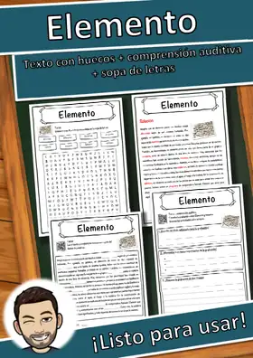
Elemento – Ficha: texto con huecos, comprensión auditiva y sopa de letras
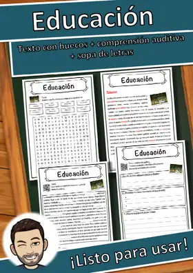
Educación – Ficha: texto con huecos, comprensión auditiva y sopa de letras
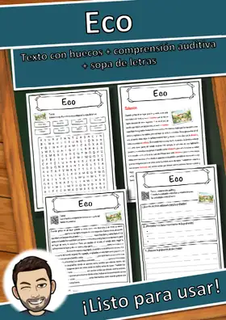
Eco – Ficha: texto con huecos, comprensión auditiva y sopa de letras
No se encontraron recursos. Prueba con otra palabra o con otro filtro.